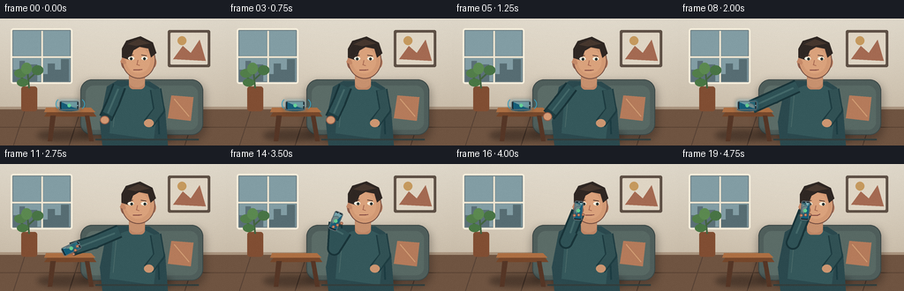
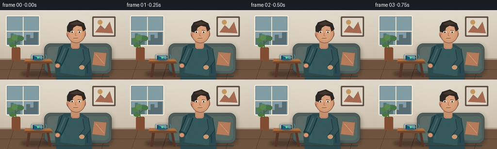

CODING AGENTS AS PIXEL WORLD MODELS
traex/GPT-5.6-Sol · motion_rationality_0049
点击播放 · 原生 RGB 像素
逐轮保存的候选
回放视频、检查图与代码变化。
每份候选均可单独播放。实际图片检查记录在下方工具轨迹中。
候选 01播放与检查图
点击播放 · 原生 RGB 像素


展开代码变化
--- 上一保存版本
+++ 本次保存版本
@@ -0,0 +1,276 @@
+from pathlib import Path
+import math
+import numpy as np
+from PIL import Image, ImageDraw, ImageFilter
+import artifact_io
+
+W, H, N = 256, 144, 20
+S = 4
+
+# ---------- drawing helpers ----------
+def sc(v):
+ if isinstance(v, (tuple, list)):
+ return tuple(int(round(x*S)) for x in v)
+ return int(round(v*S))
+
+def smooth(x):
+ x = max(0.0, min(1.0, x))
+ return x*x*(3-2*x)
+
+def lerp(a,b,t): return a+(b-a)*t
+
+def mixpt(a,b,t): return (lerp(a[0],b[0],t), lerp(a[1],b[1],t))
+
+def ellipse(d, box, fill, outline=None, width=1):
+ d.ellipse(sc(box), fill=fill, outline=outline, width=sc(width) if outline else 1)
+
+def polygon(d, pts, fill): d.polygon([sc(p) for p in pts], fill=fill)
+
+def line(d, pts, fill, width):
+ d.line([sc(p) for p in pts], fill=fill, width=sc(width), joint='curve')
+ for p in pts[1:-1]: ellipse(d, (p[0]-width/2,p[1]-width/2,p[0]+width/2,p[1]+width/2), fill)
+
+def rounded(d, box, radius, fill, outline=None, width=1):
+ d.rounded_rectangle(sc(box), radius=sc(radius), fill=fill, outline=outline, width=sc(width))
+
+def cubic(p0,p1,p2,p3,t):
+ q=1-t
+ return (q**3*p0[0]+3*q*q*t*p1[0]+3*q*t*t*p2[0]+t**3*p3[0],
+ q**3*p0[1]+3*q*q*t*p1[1]+3*q*t*t*p2[1]+t**3*p3[1])
+
+def phone_sprite(angle_deg, glow=False):
+ # Canonical portrait phone, centered; oversized transparent pad permits rotation.
+ size=40*S
+ lay=Image.new('RGBA',(size,size),(0,0,0,0)); d=ImageDraw.Draw(lay)
+ cx=cy=size//2; pw,ph=10*S,22*S
+ box=(cx-pw//2,cy-ph//2,cx+pw//2,cy+ph//2)
+ if glow:
+ gd=Image.new('RGBA',lay.size,(0,0,0,0)); g=ImageDraw.Draw(gd)
+ g.rounded_rectangle((box[0]-2*S,box[1]-2*S,box[2]+2*S,box[3]+2*S),radius=3*S,fill=(74,196,242,95))
+ gd=gd.filter(ImageFilter.GaussianBlur(2*S)); lay.alpha_composite(gd)
+ d.rounded_rectangle(box,radius=2*S,fill=(18,26,32,255),outline=(90,106,112,255),width=S)
+ inner=(box[0]+S,box[1]+2*S,box[2]-S,box[3]-2*S)
+ d.rounded_rectangle(inner,radius=S,fill=(22,93,120,255))
+ # subtle diagonal screen reflection and call-symbol circle
+ d.polygon([(inner[0],inner[1]),(inner[2],inner[1]),(inner[0],inner[3])],fill=(45,129,155,150))
+ d.ellipse((cx-2*S,cy-2*S,cx+2*S,cy+2*S),fill=(83,213,150,220))
+ d.ellipse((cx-S//2,box[1]+S,cx+S//2,box[1]+2*S),fill=(150,174,180,255))
+ return lay.rotate(angle_deg, resample=Image.Resampling.BICUBIC, expand=False)
+
+def paste_center(base, sprite, center):
+ base.alpha_composite(sprite, (int(center[0]*S-sprite.width/2),int(center[1]*S-sprite.height/2)))
+
+# ---------- stable high-detail room background ----------
+def make_background():
+ # warm vertical wall gradient with gentle vignette
+ yy,xx=np.mgrid[0:H*S,0:W*S]
+ top=np.array([232,225,211],float); bottom=np.array([201,186,165],float)
+ f=(yy/(H*S-1))[...,None]
+ arr=top*(1-f)+bottom*f
+ vign=np.sqrt(((xx-W*S*.52)/(W*S))**2+((yy-H*S*.42)/(H*S))**2)
+ arr-=np.clip(vign[...,None]*16,0,12)
+ arr=np.clip(arr,0,255).astype(np.uint8)
+ im=Image.fromarray(arr,'RGB').convert('RGBA'); d=ImageDraw.Draw(im)
+ # window alcove, left side
+ rounded(d,(12,11,82,74),3,(111,128,133,255),(245,238,220,255),2)
+ # dusky sky panes
+ for bx in [(15,14,46,42),(49,14,79,42),(15,45,46,71),(49,45,79,71)]:
+ d.rectangle(sc(bx),fill=(130,157,164,255))
+ # distant skyline and reflected evening light
+ polygon(d,[(15,58),(22,58),(22,48),(28,48),(28,62),(34,62),(34,52),(42,52),(42,71),(15,71)],(91,112,119,160))
+ polygon(d,[(49,63),(54,63),(54,51),(62,51),(62,58),(69,58),(69,46),(78,46),(78,71),(49,71)],(87,109,115,165))
+ line(d,[(47.5,14),(47.5,72)],(239,231,211,255),2)
+ line(d,[(14,43.5),(80,43.5)],(239,231,211,255),2)
+ # framed abstract art
+ rounded(d,(190,13,238,55),2,(94,80,69,255))
+ rounded(d,(193,16,235,52),1,(223,213,196,255))
+ polygon(d,[(196,46),(207,31),(216,39),(226,24),(233,48)],(164,106,82,255))
+ ellipse(d,(201,20,211,30),(197,153,94,255))
+ # baseboard
+ d.rectangle(sc((0,100,256,105)),fill=(169,148,126,255))
+ d.rectangle(sc((0,103,256,144)),fill=(111,84,65,255))
+ # floorboards
+ for x in [28,91,156,222]: line(d,[(x,104),(x-13,144)],(87,66,53,100),1)
+ line(d,[(0,123),(256,123)],(91,68,52,100),1)
+ # couch, shadows then structure
+ shadow=Image.new('RGBA',im.size,(0,0,0,0)); sd=ImageDraw.Draw(shadow)
+ rounded(sd,(91,73,231,137),13,(40,31,29,100)); shadow=shadow.filter(ImageFilter.GaussianBlur(5*S)); im.alpha_composite(shadow)
+ d=ImageDraw.Draw(im)
+ rounded(d,(91,69,230,132),13,(79,94,91,255),(60,71,70,255),1)
+ rounded(d,(97,76,159,126),9,(91,108,103,255))
+ rounded(d,(161,76,224,126),9,(88,105,100,255))
+ line(d,[(160,78),(160,127)],(66,79,77,255),2)
+ # pillow
+ polygon(d,[(194,87),(219,89),(216,116),(190,113)],(181,123,91,255))
+ line(d,[(197,91),(214,111)],(210,158,117,150),1)
+ # plant and pot at left behind table
+ rounded(d,(24,77,42,105),3,(129,78,51,255))
+ line(d,[(33,79),(31,58)],(67,100,64,255),2)
+ line(d,[(32,73),(20,64)],(67,100,64,255),2)
+ line(d,[(32,69),(43,59)],(67,100,64,255),2)
+ ellipse(d,(16,57,30,67),(82,126,74,255)); ellipse(d,(36,53,49,64),(72,116,69,255))
+ ellipse(d,(24,50,36,63),(91,137,80,255)); ellipse(d,(19,68,32,77),(73,119,68,255))
+ # side table: top with edge and tapered legs
+ shadow=Image.new('RGBA',im.size,(0,0,0,0)); sd=ImageDraw.Draw(shadow)
+ sd.ellipse(sc((42,126,105,139)),fill=(24,17,14,100)); shadow=shadow.filter(ImageFilter.GaussianBlur(3*S)); im.alpha_composite(shadow)
+ d=ImageDraw.Draw(im)
+ polygon(d,[(55,104),(104,104),(109,111),(50,111)],(117,71,43,255))
+ polygon(d,[(52,101),(103,101),(108,106),(50,106)],(173,111,67,255))
+ polygon(d,[(57,110),(63,110),(59,139),(54,139)],(85,54,38,255))
+ polygon(d,[(96,110),(101,110),(106,139),(101,139)],(85,54,38,255))
+ return im
+
+BG=make_background()
+
+# ---------- character and action ----------
+def arm_pose(t):
+ # t normalized over clip. Deliberate: rest -> reach -> grasp -> lift -> hold.
+ shoulder=(135.0,76.5)
+ if t < .16:
+ e=(128.0,95.0); w=(119.5,113.0); grip=0.0
+ elif t < .47:
+ u=smooth((t-.16)/.31)
+ e=mixpt((128,95),(108,88),u); w=mixpt((119.5,113),(81,99),u); grip=0.0
+ elif t < .55:
+ u=smooth((t-.47)/.08)
+ e=mixpt((108,88),(107,87),u); w=mixpt((81,99),(80,98),u); grip=u
+ elif t < .84:
+ u=smooth((t-.55)/.29)
+ # elbow folds under the rising hand while phone follows a smooth arc
+ e=cubic((107,87),(108,102),(124,100),(129,88),u)
+ w=cubic((80,98),(91,82),(125,67),(143,54),u)
+ grip=1.0
+ else:
+ u=smooth((t-.84)/.16)
+ e=mixpt((129,88),(130,89),u); w=mixpt((143,54),(144,54),u); grip=1.0
+ return shoulder,e,w,grip
+
+def draw_character(base, t, frame_idx):
+ # minimal organic movement without compromising object continuity
+ breathe=0.45*math.sin(t*math.pi*2)
+ im=base.copy(); d=ImageDraw.Draw(im)
+ # soft character cast shadow
+ sh=Image.new('RGBA',im.size,(0,0,0,0)); sd=ImageDraw.Draw(sh)
+ ellipse(sd,(113,125,195,142),(30,22,20,100)); sh=sh.filter(ImageFilter.GaussianBlur(4*S)); im.alpha_composite(sh); d=ImageDraw.Draw(im)
+
+ # torso silhouette, knit pullover
+ polygon(d,[(133,70+breathe),(121,77+breathe),(113,117),(116,144),(190,144),(187,103),(180,78+breathe),(169,71+breathe)],(43,73,78,255))
+ # sweater lit center and neckline
+ polygon(d,[(143,76),(128,82),(124,130),(174,137),(180,83),(164,75)],(53,88,91,255))
+ line(d,[(132,80),(128,123)],(72,104,104,130),1)
+ line(d,[(178,83),(180,131)],(28,59,65,170),2)
+ # neck
+ rounded(d,(146,59+breathe,164,80+breathe),5,(190,134,102,255))
+ ellipse(d,(146,63+breathe,164,78+breathe),(199,145,111,255))
+
+ # head shadow + ears + face, slight attention lean during reach
+ att=smooth((t-.12)/.55)
+ hx=-1.7*math.sin(att*math.pi) if t<.68 else 0
+ hy=0.4*math.sin(t*math.pi*2)
+ # ear behind face, visible on phone side
+ ellipse(d,(137+hx,42+hy,146+hx,57+hy),(190,129,98,255),(145,93,74,255),1)
+ ellipse(d,(169+hx,43+hy,177+hx,56+hy),(182,123,94,255))
+ ellipse(d,(138+hx,26+hy,176+hx,68+hy),(210,153,116,255),(117,78,65,255),1)
+ # face planes and nose indication
+ polygon(d,[(139+hx,43+hy),(136+hx,49+hy),(141+hx,52+hy),(143+hx,50+hy)],(197,137,104,255))
+ ellipse(d,(143+hx,33+hy,170+hx,62+hy),(218,162,124,110))
+ # hair mass, side swept
+ polygon(d,[(138+hx,44+hy),(138+hx,34+hy),(143+hx,25+hy),(159+hx,20+hy),(173+hx,27+hy),(177+hx,39+hy),(171+hx,44+hy),(168+hx,34+hy),(158+hx,32+hy),(151+hx,36+hy),(147+hx,47+hy)],(47,39,35,255))
+ polygon(d,[(144+hx,29+hy),(157+hx,23+hy),(170+hx,28+hy),(154+hx,31+hy)],(70,55,46,255))
+ # eyebrows; gaze drifts toward table and then forward
+ gaze=smooth((t-.05)/.35)
+ line(d,[(146+hx,42+hy),(151+hx,41+hy)],(72,48,40,255),1)
+ line(d,[(160+hx,41+hy),(166+hx,42+hy)],(72,48,40,255),1)
+ # blink around frame 7, otherwise eyes with pupils looking left/down initially
+ blink=(frame_idx==7)
+ if blink:
+ line(d,[(145+hx,45+hy),(151+hx,45+hy)],(70,50,43,255),1)
+ line(d,[(160+hx,45+hy),(166+hx,45+hy)],(70,50,43,255),1)
+ else:
+ ellipse(d,(145+hx,43+hy,152+hx,47+hy),(246,239,222,255))
+ ellipse(d,(160+hx,43+hy,167+hx,47+hy),(246,239,222,255))
+ px=-1.1*(1-gaze)
+ ellipse(d,(148+hx+px,44+hy,151+hx+px,47+hy),(39,47,45,255))
+ ellipse(d,(163+hx+px,44+hy,166+hx+px,47+hy),(39,47,45,255))
+ # nose and calm mouth / slight smile when answered
+ line(d,[(156+hx,47+hy),(155+hx,52+hy),(158+hx,53+hy)],(168,106,83,255),1)
+ smile=smooth((t-.83)/.17)
+ line(d,[(151+hx,58+hy),(158+hx,58+hy),(161+hx,57.5-smile+hy)],(126,69,63,255),1)
+
+ # non-active arm rests across lap
+ line(d,[(176,80+breathe),(180,104),(168,119)],(30,60,65,255),13)
+ line(d,[(176,80+breathe),(180,103),(169,118)],(49,81,84,255),10)
+ ellipse(d,(163,114,174,123),(205,150,113,255))
+
+ # moving arm, outlined and shaded; hand at wrist
+ shoulder,elbow,wrist,grip=arm_pose(t)
+ shoulder=(shoulder[0],shoulder[1]+breathe)
+ # arm's shadow/outline provides clear anatomy
+ line(d,[shoulder,elbow,wrist],(25,52,57,255),16)
+ line(d,[shoulder,elbow,wrist],(47,82,86,255),12)
+ # seam/highlight on sleeve
+ line(d,[mixpt(shoulder,elbow,.18),mixpt(elbow,wrist,.70)],(67,104,105,155),2)
+ # cuff and hand
+ vx=wrist[0]-elbow[0]; vy=wrist[1]-elbow[1]; L=max(1,math.hypot(vx,vy)); ux,uy=vx/L,vy/L
+ cuff=(wrist[0]-ux*5,wrist[1]-uy*5)
+ line(d,[cuff,wrist],(31,61,66,255),12)
+ # palm extends a touch beyond wrist in arm direction
+ hand=(wrist[0]+ux*2.2,wrist[1]+uy*2.2)
+ ellipse(d,(hand[0]-5.2,hand[1]-4.8,hand[0]+5.2,hand[1]+4.8),(211,153,115,255),(150,94,74,255),1)
+
+ # Phone location/rotation: exactly stationary until grasp, then physically attached to hand.
+ if t < .47:
+ pc=(78.5,98.5); angle=-90; moving=False
+ elif t < .55:
+ u=smooth((t-.47)/.08); pc=mixpt((78.5,98.5),(80,97.5),u); angle=lerp(-90,-66,u); moving=True
+ else:
+ u=smooth((t-.55)/.29) if t<.84 else 1.0
+ pc=(wrist[0],wrist[1]-1.1); angle=lerp(-66,-5,u); moving=True
+ # contact shadow remains on table only while phone lies there
+ if t < .53:
+ alpha=int(95*(1-smooth((t-.47)/.06))) if t>.47 else 95
+ ellipse(d,(67,101,89,105),(45,31,24,alpha))
+ glow=t<.47
+ ps=phone_sprite(angle,glow=glow)
+ paste_center(im,ps,pc)
+ d=ImageDraw.Draw(im)
+
+ # ringing arcs before pickup, short restrained pulses around the actual phone
+ if t < .39:
+ pulse=0.4+0.6*(0.5+0.5*math.sin(frame_idx*2.5))
+ col=(58,158,188,int(190*pulse))
+ # arcs are rotated conceptually with flat phone and clearly emanate from it
+ d.arc(sc((63,91,72,103)),start=120,end=245,fill=col,width=sc(1))
+ d.arc(sc((86,91,96,103)),start=-65,end=65,fill=col,width=sc(1))
+
+ # fingers wrap in front of phone once contact occurs, making the grasp unambiguous
+ if grip>0.15 or moving:
+ # small fingertips along the outer phone edge, adapt to transition; kept thin so screen remains visible
+ a=math.radians(angle); side=(math.cos(a),math.sin(a)); perp=(-side[1],side[0])
+ for off in (-5,0,5):
+ cx=pc[0]+side[0]*off+perp[0]*4.8
+ cy=pc[1]+side[1]*off+perp[1]*4.8
+ ellipse(d,(cx-1.7,cy-1.6,cx+1.7,cy+1.6),(219,161,121,255),(150,94,74,255),1)
+
+ # foreground couch edge anchors seated body
+ line(d,[(108,137),(225,137)],(50,62,61,200),2)
+ return im
+
+
+def generate_frames():
+ out=[]
+ for i in range(N):
+ t=i/(N-1)
+ frame=draw_character(BG,t,i)
+ # light film grain, deterministic and extremely subtle
+ arr=np.asarray(frame.convert('RGB').resize((W,H),Image.Resampling.LANCZOS)).astype(np.int16)
+ rng=np.random.default_rng(812+i)
+ noise=rng.normal(0,0.65,arr.shape[:2])[...,None]
+ arr=np.clip(arr+noise,0,255).astype(np.uint8)
+ out.append(arr)
+ return np.stack(out)
+
+if __name__ == '__main__':
+ frames=generate_frames()
+ artifact_io.save(frames, Path(__file__).resolve().parent)
+ print('saved',frames.shape,frames.dtype)
可观测工具轨迹
实际执行的命令与返回图片。
命令 1exit 0
/bin/bash -lc "cat prompt.txt && printf '\\n---RULES---\\n' && cat GENERATION_RULES.md && printf '\\n---SPEC---\\n' && cat task_spec.json"
命令 2exit 1
/bin/bash -lc "find . -maxdepth 2 -type f -printf '%p\\n' | sort && printf '\\nTOOLS\\n' && command -v ffmpeg && command -v python3 && python3 - <<'PY'
try:
import cv2; print('cv2',cv2.__version__)
except Exception as e: print('no cv2',e)
try:
import PIL; print('PIL',PIL.__version__)
except Exception as e: print('no PIL',e)
PY"命令 3exit 0
/bin/bash -lc "cat artifact_io.py; printf '\\n--- ffmpeg/python ---\\n'; command -v ffmpeg || true; command -v python3 || true; python3 - <<'PY' mods=['numpy','PIL','cv2','imageio'] for m in mods: try: x=__import__(m); print(m,getattr(x,'__version__','ok')) except Exception as e: print(m,'NO',e) PY"
命令 4exit 0
/bin/bash -lc "cat > generate.py <<'PY'
from pathlib import Path
import math
import numpy as np
from PIL import Image, ImageDraw, ImageFilter
import artifact_io
W, H, N = 256, 144, 20
S = 4
# ---------- drawing helpers ----------
def sc(v):
if isinstance(v, (tuple, list)):
return tuple(int(round(x*S)) for x in v)
return int(round(v*S))
def smooth(x):
x = max(0.0, min(1.0, x))
return x*x*(3-2*x)
def lerp(a,b,t): return a+(b-a)*t
def mixpt(a,b,t): return (lerp(a[0],b[0],t), lerp(a[1],b[1],t))
def ellipse(d, box, fill, outline=None, width=1):
d.ellipse(sc(box), fill=fill, outline=outline, width=sc(width) if outline else 1)
def polygon(d, pts, fill): d.polygon([sc(p) for p in pts], fill=fill)
def line(d, pts, fill, width):
d.line([sc(p) for p in pts], fill=fill, width=sc(width), joint='curve')
for p in pts[1:-1]: ellipse(d, (p[0]-width/2,p[1]-width/2,p[0]+width/2,p[1]+width/2), fill)
def rounded(d, box, radius, fill, outline=None, width=1):
d.rounded_rectangle(sc(box), radius=sc(radius), fill=fill, outline=outline, width=sc(width))
def cubic(p0,p1,p2,p3,t):
q=1-t
return (q**3*p0[0]+3*q*q*t*p1[0]+3*q*t*t*p2[0]+t**3*p3[0],
q**3*p0[1]+3*q*q*t*p1[1]+3*q*t*t*p2[1]+t**3*p3[1])
def phone_sprite(angle_deg, glow=False):
# Canonical portrait phone, centered; oversized transparent pad permits rotation.
size=40*S
lay=Image.new('RGBA',(size,size),(0,0,0,0)); d=ImageDraw.Draw(lay)
cx=cy=size//2; pw,ph=10*S,22*S
box=(cx-pw//2,cy-ph//2,cx+pw//2,cy+ph//2)
if glow:
gd=Image.new('RGBA',lay.size,(0,0,0,0)); g=ImageDraw.Draw(gd)
g.rounded_rectangle((box[0]-2*S,box[1]-2*S,box[2]+2*S,box[3]+2*S),radius=3*S,fill=(74,196,242,95))
gd=gd.filter(ImageFilter.GaussianBlur(2*S)); lay.alpha_composite(gd)
d.rounded_rectangle(box,radius=2*S,fill=(18,26,32,255),outline=(90,106,112,255),width=S)
inner=(box[0]+S,box[1]+2*S,box[2]-S,box[3]-2*S)
d.rounded_rectangle(inner,radius=S,fill=(22,93,120,255))
# subtle diagonal screen reflection and call-symbol circle
d.polygon([(inner[0],inner[1]),(inner[2],inner[1]),(inner[0],inner[3])],fill=(45,129,155,150))
d.ellipse((cx-2*S,cy-2*S,cx+2*S,cy+2*S),fill=(83,213,150,220))
d.ellipse((cx-S//2,box[1]+S,cx+S//2,box[1]+2*S),fill=(150,174,180,255))
return lay.rotate(angle_deg, resample=Image.Resampling.BICUBIC, expand=False)
def paste_center(base, sprite, center):
base.alpha_composite(sprite, (int(center[0]*S-sprite.width/2),int(center[1]*S-sprite.height/2)))
# ---------- stable high-detail room background ----------
def make_background():
# warm vertical wall gradient with gentle vignette
yy,xx=np.mgrid[0:H*S,0:W*S]
top=np.array([232,225,211],float); bottom=np.array([201,186,165],float)
f=(yy/(H*S-1))[...,None]
arr=top*(1-f)+bottom*f
vign=np.sqrt(((xx-W*S*.52)/(W*S))**2+((yy-H*S*.42)/(H*S))**2)
arr-=np.clip(vign[...,None]*16,0,12)
arr=np.clip(arr,0,255).astype(np.uint8)
im=Image.fromarray(arr,'RGB').convert('RGBA'); d=ImageDraw.Draw(im)
# window alcove, left side
rounded(d,(12,11,82,74),3,(111,128,133,255),(245,238,220,255),2)
# dusky sky panes
for bx in [(15,14,46,42),(49,14,79,42),(15,45,46,71),(49,45,79,71)]:
d.rectangle(sc(bx),fill=(130,157,164,255))
# distant skyline and reflected evening light
polygon(d,[(15,58),(22,58),(22,48),(28,48),(28,62),(34,62),(34,52),(42,52),(42,71),(15,71)],(91,112,119,160))
polygon(d,[(49,63),(54,63),(54,51),(62,51),(62,58),(69,58),(69,46),(78,46),(78,71),(49,71)],(87,109,115,165))
line(d,[(47.5,14),(47.5,72)],(239,231,211,255),2)
line(d,[(14,43.5),(80,43.5)],(239,231,211,255),2)
# framed abstract art
rounded(d,(190,13,238,55),2,(94,80,69,255))
rounded(d,(193,16,235,52),1,(223,213,196,255))
polygon(d,[(196,46),(207,31),(216,39),(226,24),(233,48)],(164,106,82,255))
ellipse(d,(201,20,211,30),(197,153,94,255))
# baseboard
d.rectangle(sc((0,100,256,105)),fill=(169,148,126,255))
d.rectangle(sc((0,103,256,144)),fill=(111,84,65,255))
# floorboards
for x in [28,91,156,222]: line(d,[(x,104),(x-13,144)],(87,66,53,100),1)
line(d,[(0,123),(256,123)],(91,68,52,100),1)
# couch, shadows then structure
shadow=Image.new('RGBA',im.size,(0,0,0,0)); sd=ImageDraw.Draw(shadow)
rounded(sd,(91,73,231,137),13,(40,31,29,100)); shadow=shadow.filter(ImageFilter.GaussianBlur(5*S)); im.alpha_composite(shadow)
d=ImageDraw.Draw(im)
rounded(d,(91,69,230,132),13,(79,94,91,255),(60,71,70,255),1)
rounded(d,(97,76,159,126),9,(91,108,103,255))
rounded(d,(161,76,224,126),9,(88,105,100,255))
line(d,[(160,78),(160,127)],(66,79,77,255),2)
# pillow
polygon(d,[(194,87),(219,89),(216,116),(190,113)],(181,123,91,255))
line(d,[(197,91),(214,111)],(210,158,117,150),1)
# plant and pot at left behind table
rounded(d,(24,77,42,105),3,(129,78,51,255))
line(d,[(33,79),(31,58)],(67,100,64,255),2)
line(d,[(32,73),(20,64)],(67,100,64,255),2)
line(d,[(32,69),(43,59)],(67,100,64,255),2)
ellipse(d,(16,57,30,67),(82,126,74,255)); ellipse(d,(36,53,49,64),(72,116,69,255))
ellipse(d,(24,50,36,63),(91,137,80,255)); ellipse(d,(19,68,32,77),(73,119,68,255))
# side table: top with edge and tapered legs
shadow=Image.new('RGBA',im.size,(0,0,0,0)); sd=ImageDraw.Draw(shadow)
sd.ellipse(sc((42,126,105,139)),fill=(24,17,14,100)); shadow=shadow.filter(ImageFilter.GaussianBlur(3*S)); im.alpha_composite(shadow)
d=ImageDraw.Draw(im)
polygon(d,[(55,104),(104,104),(109,111),(50,111)],(117,71,43,255))
polygon(d,[(52,101),(103,101),(108,106),(50,106)],(173,111,67,255))
polygon(d,[(57,110),(63,110),(59,139),(54,139)],(85,54,38,255))
polygon(d,[(96,110),(101,110),(106,139),(101,139)],(85,54,38,255))
return im
BG=make_background()
# ---------- character and action ----------
def arm_pose(t):
# t normalized over clip. Deliberate: rest -> reach -> grasp -> lift -> hold.
shoulder=(135.0,76.5)
if t < .16:
e=(128.0,95.0); w=(119.5,113.0); grip=0.0
elif t < .47:
u=smooth((t-.16)/.31)
e=mixpt((128,95),(108,88),u); w=mixpt((119.5,113),(81,99),u); grip=0.0
elif t < .55:
u=smooth((t-.47)/.08)
e=mixpt((108,88),(107,87),u); w=mixpt((81,99),(80,98),u); grip=u
elif t < .84:
u=smooth((t-.55)/.29)
# elbow folds under the rising hand while phone follows a smooth arc
e=cubic((107,87),(108,102),(124,100),(129,88),u)
w=cubic((80,98),(91,82),(125,67),(143,54),u)
grip=1.0
else:
u=smooth((t-.84)/.16)
e=mixpt((129,88),(130,89),u); w=mixpt((143,54),(144,54),u); grip=1.0
return shoulder,e,w,grip
def draw_character(base, t, frame_idx):
# minimal organic movement without compromising object continuity
breathe=0.45*math.sin(t*math.pi*2)
im=base.copy(); d=ImageDraw.Draw(im)
# soft character cast shadow
sh=Image.new('RGBA',im.size,(0,0,0,0)); sd=ImageDraw.Draw(sh)
ellipse(sd,(113,125,195,142),(30,22,20,100)); sh=sh.filter(ImageFilter.GaussianBlur(4*S)); im.alpha_composite(sh); d=ImageDraw.Draw(im)
# torso silhouette, knit pullover
polygon(d,[(133,70+breathe),(121,77+breathe),(113,117),(116,144),(190,144),(187,103),(180,78+breathe),(169,71+breathe)],(43,73,78,255))
# sweater lit center and neckline
polygon(d,[(143,76),(128,82),(124,130),(174,137),(180,83),(164,75)],(53,88,91,255))
line(d,[(132,80),(128,123)],(72,104,104,130),1)
line(d,[(178,83),(180,131)],(28,59,65,170),2)
# neck
rounded(d,(146,59+breathe,164,80+breathe),5,(190,134,102,255))
ellipse(d,(146,63+breathe,164,78+breathe),(199,145,111,255))
# head shadow + ears + face, slight attention lean during reach
att=smooth((t-.12)/.55)
hx=-1.7*math.sin(att*math.pi) if t<.68 else 0
hy=0.4*math.sin(t*math.pi*2)
# ear behind face, visible on phone side
ellipse(d,(137+hx,42+hy,146+hx,57+hy),(190,129,98,255),(145,93,74,255),1)
ellipse(d,(169+hx,43+hy,177+hx,56+hy),(182,123,94,255))
ellipse(d,(138+hx,26+hy,176+hx,68+hy),(210,153,116,255),(117,78,65,255),1)
# face planes and nose indication
polygon(d,[(139+hx,43+hy),(136+hx,49+hy),(141+hx,52+hy),(143+hx,50+hy)],(197,137,104,255))
ellipse(d,(143+hx,33+hy,170+hx,62+hy),(218,162,124,110))
# hair mass, side swept
polygon(d,[(138+hx,44+hy),(138+hx,34+hy),(143+hx,25+hy),(159+hx,20+hy),(173+hx,27+hy),(177+hx,39+hy),(171+hx,44+hy),(168+hx,34+hy),(158+hx,32+hy),(151+hx,36+hy),(147+hx,47+hy)],(47,39,35,255))
polygon(d,[(144+hx,29+hy),(157+hx,23+hy),(170+hx,28+hy),(154+hx,31+hy)],(70,55,46,255))
# eyebrows; gaze drifts toward table and then forward
gaze=smooth((t-.05)/.35)
line(d,[(146+hx,42+hy),(151+hx,41+hy)],(72,48,40,255),1)
line(d,[(160+hx,41+hy),(166+hx,42+hy)],(72,48,40,255),1)
# blink around frame 7, otherwise eyes with pupils looking left/down initially
blink=(frame_idx==7)
if blink:
line(d,[(145+hx,45+hy),(151+hx,45+hy)],(70,50,43,255),1)
line(d,[(160+hx,45+hy),(166+hx,45+hy)],(70,50,43,255),1)
else:
ellipse(d,(145+hx,43+hy,152+hx,47+hy),(246,239,222,255))
ellipse(d,(160+hx,43+hy,167+hx,47+hy),(246,239,222,255))
px=-1.1*(1-gaze)
ellipse(d,(148+hx+px,44+hy,151+hx+px,47+hy),(39,47,45,255))
ellipse(d,(163+hx+px,44+hy,166+hx+px,47+hy),(39,47,45,255))
# nose and calm mouth / slight smile when answered
line(d,[(156+hx,47+hy),(155+hx,52+hy),(158+hx,53+hy)],(168,106,83,255),1)
smile=smooth((t-.83)/.17)
line(d,[(151+hx,58+hy),(158+hx,58+hy),(161+hx,57.5-smile+hy)],(126,69,63,255),1)
# non-active arm rests across lap
line(d,[(176,80+breathe),(180,104),(168,119)],(30,60,65,255),13)
line(d,[(176,80+breathe),(180,103),(169,118)],(49,81,84,255),10)
ellipse(d,(163,114,174,123),(205,150,113,255))
# moving arm, outlined and shaded; hand at wrist
shoulder,elbow,wrist,grip=arm_pose(t)
shoulder=(shoulder[0],shoulder[1]+breathe)
# arm's shadow/outline provides clear anatomy
line(d,[shoulder,elbow,wrist],(25,52,57,255),16)
line(d,[shoulder,elbow,wrist],(47,82,86,255),12)
# seam/highlight on sleeve
line(d,[mixpt(shoulder,elbow,.18),mixpt(elbow,wrist,.70)],(67,104,105,155),2)
# cuff and hand
vx=wrist[0]-elbow[0]; vy=wrist[1]-elbow[1]; L=max(1,math.hypot(vx,vy)); ux,uy=vx/L,vy/L
cuff=(wrist[0]-ux*5,wrist[1]-uy*5)
line(d,[cuff,wrist],(31,61,66,255),12)
# palm extends a touch beyond wrist in arm direction
hand=(wrist[0]+ux*2.2,wrist[1]+uy*2.2)
ellipse(d,(hand[0]-5.2,hand[1]-4.8,hand[0]+5.2,hand[1]+4.8),(211,153,115,255),(150,94,74,255),1)
# Phone location/rotation: exactly stationary until grasp, then physically attached to hand.
if t < .47:
pc=(78.5,98.5); angle=-90; moving=False
elif t < .55:
u=smooth((t-.47)/.08); pc=mixpt((78.5,98.5),(80,97.5),u); angle=lerp(-90,-66,u); moving=True
else:
u=smooth((t-.55)/.29) if t<.84 else 1.0
pc=(wrist[0],wrist[1]-1.1); angle=lerp(-66,-5,u); moving=True
# contact shadow remains on table only while phone lies there
if t < .53:
alpha=int(95*(1-smooth((t-.47)/.06))) if t>.47 else 95
ellipse(d,(67,101,89,105),(45,31,24,alpha))
glow=t<.47
ps=phone_sprite(angle,glow=glow)
paste_center(im,ps,pc)
d=ImageDraw.Draw(im)
# ringing arcs before pickup, short restrained pulses around the actual phone
if t < .39:
pulse=0.4+0.6*(0.5+0.5*math.sin(frame_idx*2.5))
col=(58,158,188,int(190*pulse))
# arcs are rotated conceptually with flat phone and clearly emanate from it
d.arc(sc((63,91,72,103)),start=120,end=245,fill=col,width=sc(1))
d.arc(sc((86,91,96,103)),start=-65,end=65,fill=col,width=sc(1))
# fingers wrap in front of phone once contact occurs, making the grasp unambiguous
if grip>0.15 or moving:
# small fingertips along the outer phone edge, adapt to transition; kept thin so screen remains visible
a=math.radians(angle); side=(math.cos(a),math.sin(a)); perp=(-side[1],side[0])
for off in (-5,0,5):
cx=pc[0]+side[0]*off+perp[0]*4.8
cy=pc[1]+side[1]*off+perp[1]*4.8
ellipse(d,(cx-1.7,cy-1.6,cx+1.7,cy+1.6),(219,161,121,255),(150,94,74,255),1)
# foreground couch edge anchors seated body
line(d,[(108,137),(225,137)],(50,62,61,200),2)
return im
def generate_frames():
out=[]
for i in range(N):
t=i/(N-1)
frame=draw_character(BG,t,i)
# light film grain, deterministic and extremely subtle
arr=np.asarray(frame.convert('RGB').resize((W,H),Image.Resampling.LANCZOS)).astype(np.int16)
rng=np.random.default_rng(812+i)
noise=rng.normal(0,0.65,arr.shape[:2])[...,None]
arr=np.clip(arr+noise,0,255).astype(np.uint8)
out.append(arr)
return np.stack(out)
if __name__ == '__main__':
frames=generate_frames()
artifact_io.save(frames, Path(__file__).resolve().parent)
print('saved',frames.shape,frames.dtype)
PY
python3 generate.py
ls -lh pixels.npz inspection.png index.html frames/00.png frames/19.png"视觉工具实际返回图片 1

保存候选 1 份；完成命令 4 次；可验证图片返回 1 张。原始 API 响应与完整日志保留在本地。